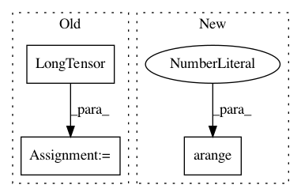

430beec651fe14e4f0f032cbc27e18a9ca415d90,examples/cora.py,,,#,11
Before Change
data = dataset[0]
input, adj, target = data["input"], data["adj"], data["target"]
n = adj.size(0)
train_mask = torch.arange(0, n - 1000, out=torch.LongTensor())
test_mask = torch.arange(n - 500, n, out=torch.LongTensor())
if torch.cuda.is_available():
input, adj, target = input.cuda(), adj.cuda(), target.cuda()
train_mask, test_mask = train_mask.cuda(), test_mask.cuda()
input, target = Variable(input), Variable(target)
After Change
path = os.path.join(path, "..", "data", "Cora")
dataset = Cora(path, transform=TargetIndegreeAdj())
data = dataset[0].cuda().to_variable()
train_mask = torch.arange(0, data.num_nodes - 1000).long()
test_mask = torch.arange(data.num_nodes - 500, data.num_nodes).long()
In pattern: SUPERPATTERN
Frequency: 3
Non-data size: 3
Instances
Project Name: rusty1s/pytorch_geometric
Commit Name: 430beec651fe14e4f0f032cbc27e18a9ca415d90
Time: 2018-03-06
Author: matthias.fey@tu-dortmund.de
File Name: examples/cora.py
Class Name:
Method Name:
Project Name: rusty1s/pytorch_geometric
Commit Name: 05de5cfd5fe3953cdd50b1ec21f89e67d508f13f
Time: 2017-10-20
Author: matthias.fey@tu-dortmund.de
File Name: torch_geometric/nn/functional/spline_gcn.py
Class Name:
Method Name: weight_indices
Project Name: cornellius-gp/gpytorch
Commit Name: 9b664bd7cd8dbb9657626166ba61887ed06774d7
Time: 2017-09-13
Author: gpleiss@gmail.com
File Name: gpytorch/utils/toeplitz.py
Class Name:
Method Name: index_coef_to_sparse